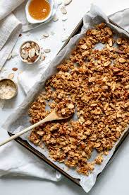

Granola

Description
A sweet and slightly salty granola perfect for topping yogurt or enjoying with milk.
Ingredients
- 4 cups Rolled Oats
- 2 cups Chopped Nuts (optional)
- 1 large dash Salt
- 2 tbsp Cinnamon
- 1/2 cup Olive Oil
- 1/2 cup Maple Syrup
- 1 tbsp Vanilla Extract
- 2 cups Crasins
Directions
- Preheat Oven to 350 Degrees F
- Combine all ingredients except Crasins in a large mixing bowl
- Spread mixture on 1/2 size aluminum baking sheet and bake for 22 min, stirring 1/2 way
- Remove from oven and let cool. Mix in 2 cups Crasins.
Home